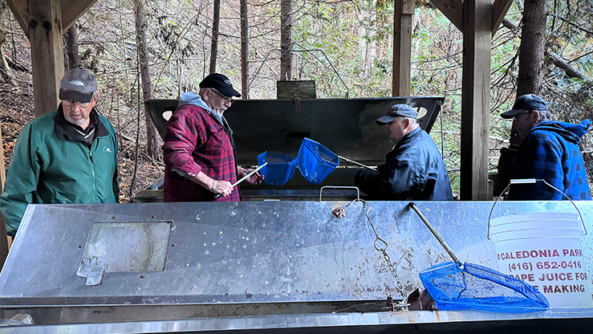
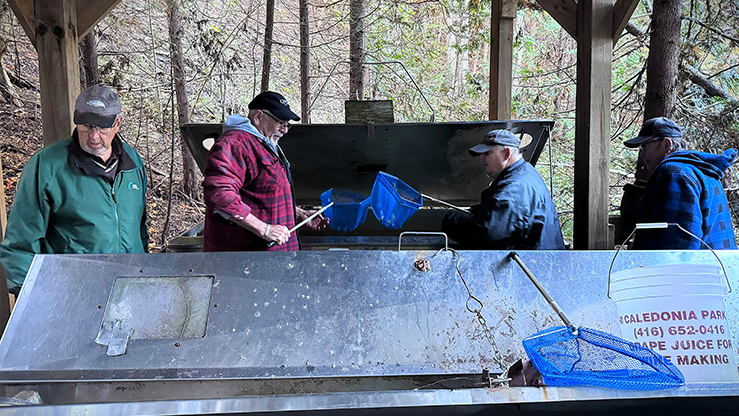
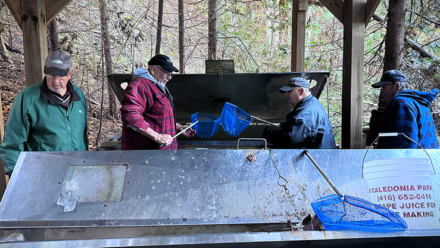

As a dedicated non-profit organization, we are committed to the conservation enhancement of local fish populations and aquatic ecosystems in the Bayfield region. Established with the mission to promote sustainable fishing practices and environmental stewardship, our association actively engages in a variety of conservation projects, educational programs, and community events. Our mission is to preserve and protect the health of fish populations and aquatic habitats.

Features Section
Aquatic Animals Conservation
Habitat Restoration
We work tirelessly to restore and enhance fish habitats. This includes cleaning up rivers and lakes, removing debris, planting native vegetation.
Stocking Programs
To support declining fish populations, we implement responsible fish stocking programs. This involves releasing native fish species into local.
Angling Practices
We advocate for responsible angling practices, including catch-and-release techniques. By educating anglers on proper handling methods and details.
Events Section
Events and Activities
Here, you'll find a variety of exciting and engaging events designed to bring our community together, promote conservation efforts, and enhance experience.
Fish Collection Plan
June 20, 2024 - The collection site will be the same that we have used since 1982, that being Nine Mile Creek, at Port albert. Location map attached. The MNR district office is Guelph District.
Fish Stocking Plan
June 30, 2024 - The fish to be stocked are rainbow trout. The fish are hatched from eggs in the hatchery tanks and cultured to a stage in their lives when it is deemed that they are strong and fit.
General Meeting
July 12, 2024 - This annual and momentous event brings together members of our organization to review the past year's achievements, discuss future plans, and elect board members.
Projects Section
Official Projects
We are dedicated to undertaking impactful projects that contribute to conservation and enhancement of local fish populations and their wildlife habitat locations.
Field Fish Habitat Enhancements
The Fish Habitat Enhancement project focuses on enhancing and restoring critical habitats for fish species within our local waterways. Our association recognizes the importance of healthy habitats in supporting robust fish populations and maintaining ecological balance. To achieve these goals, we undertake a variety of habitat enhancement initiatives such as channel modification and protection.
We strategically install artificial structures such as submerged logs, rock clusters, and underwater shelters to mimic natural habitat features. These structures provide essential shelter and refuge for fish, especially in areas where natural habitat complexity is lacking due to human alterations or environmental degradation.
Announcements Section
Announcements
We are dedicated to undertaking impactful projects that contribute to conservation and enhancement of local fish populations and their wildlife habitat locations.
"Partnership with Environmental Groups" - Through strategic partnerships and joint initiatives, we aim to enhance our impact on environmental stewardship and sustainability within our community. (Jan 23)
"Volunteer Appreciation Day" - Join us for an evening of gratitude and recognition as we honor the commitment and dedication of our invaluable volunteers. This special event is way of expressing appreciation. (Feb 21)
"Successful Release of Native Fish Species" - We're thrilled to announce the successful release of native fish species into our local waterways! This achievement wouldn't have been possible without them. (Apr 14)
 
